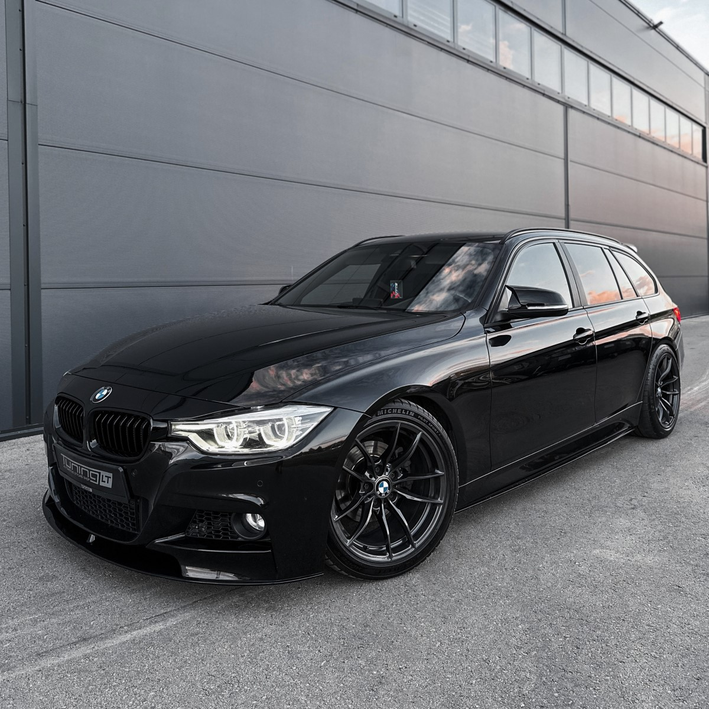

    <div class="container mt-5">
        <div class="row">
            <div class="col-lg-8 mx-auto">
                <h1 class="mb-3">Ostsin endale uue auto - BMW F31</h1>
                <p class="text-muted">Avaldatud: 20. märts 2025</p>
                
                

                <p>  Hei, autohuvilised! Lõpuks ometi on see hetk käes – ostsin endale **BMW F31 2018. aasta mudeli**. 
                Pikka aega kaalusin erinevaid valikuid, aga lõpuks langes otsus sellele mudelile. Miks? Loeme edasi!</p>
                
                <h3>Miks just BMW F31?</h3>
                <p>Olen alati tahtnud midagi, mis ühendab **mugavuse, jõudluse ja sportliku välimuse**. BMW 3. seeria Touring 
                (F31) on ideaalne valik – piisavalt ruumikas, sportlik ja praktiline. Lisaks näeb ta lihtsalt **maru hea välja!**</p>

                <h3>Esimesed muljed</h3>
                <ul>
                    <li> 200+ hobujõudu - Piisavalt võimas, et oleks lõbus!</li>
                </ul>

                <h3>Kas olen rahul?</h3>
                <p>Ausalt öeldes, **jah**! Sõidukogemus on imeline ja kõik funktsioonid töötavad laitmatult. 
                Kuid nagu ikka, pole ükski kasutatud auto täiuslik... midagi tuleb **remontida ja täiustada**. 
                Sellest aga juba järgmises postituses! 👀</p>

                <hr>

                <p><strong>Kategooriad:</strong> <span class="badge bg-primary">Autod</span> <span class="badge bg-secondary">BMW</span></p>

                <div class="d-flex justify-content-between mt-4">
                    <a href="index_.php?page=post2" class="btn btn-primary">Järgmine postitus ➡</a>
                </div>
            </div>
        </div>
    </div>

